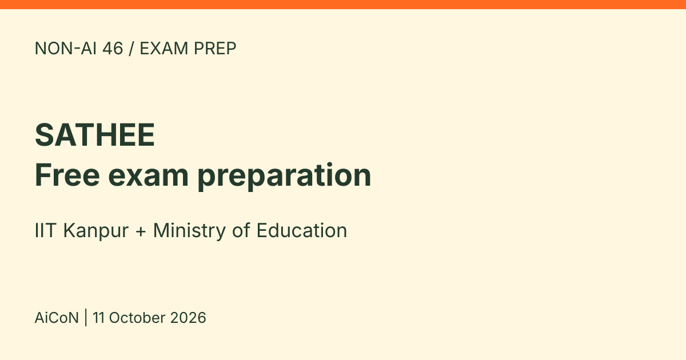

SATHEE: free exam preparation from IIT Kanpur and the Ministry of Education
SATHEE is an initiative of the Ministry of Education with IIT Kanpur. Its website says it offers free guidance for competitive exams, with video lectures, mock tests and other resources. The home page has sections for Engineering, Medical, SSC, Banking, ICAR, CUET, CLAT and RRB exams.

What does the home page offer?
- Live and recorded lectures for maths and science, classes 9 to 12, taught by IIT students
- Daily practice problems with live lectures
- Live doubt clearing in science and maths from 10am to 6pm, through a forum (not on the 2nd Saturday, Sundays and holidays)
- A WhatsApp support link and a forum to join
- SATHEE channels on SWAYAM PRABHA DTH, linked from the home page
Which exams are covered?
The home page lists tracks for engineering exams, medical exams, SSC, banking, ICAR, CUET, CLAT and RRB. There are separate pages, for example for CUET at sathee.iitk.ac.in/sathee-cuet. Open the track that matches your exam and check what it contains before you plan around it.
Free and India verdict
SATHEE is an Indian public education initiative. The official pages describe free exam guidance, video lectures and mock tests. This is preparation, not exam registration, an IIT admission offer or a degree. Do not confuse free preparation with the separate fees and eligibility rules of the actual exam. We did not create an account or test access to every resource.
How to use it well
- Open the official SATHEE home page and choose your exam track. Read what is included, and follow that track's registration instructions if a resource asks for an account.
- Match it to the official syllabus of your exam, from the conducting body.
- Use mock tests under timed conditions, then review the mistakes.
- Use the doubt-clearing forum in its timings.
We did not take a lecture or mock test ourselves. We read the SATHEE home page and CUET page on 11 October 2026.
Language and safe use
The CUET page's Ask SATHEE interface offers English, Hindi and other Indian language choices, including Malayalam. That does not prove every lecture or exam track is available in every language. Check the selected resource before relying on it. The assistant also warns that it can make mistakes, including incorrect solutions. Check answers against textbooks and official exam material.
Keep passwords, identity documents, personal contact details and payment information out of forum posts or chatbot questions. We have not audited the platform's full privacy or data-retention terms. Read its current privacy policy before signing up or using an app. We did not install the app, submit a question or test live support. Advertised support hours are not a promise of an immediate reply.
Frequently asked questions
Is it free?
The SATHEE pages we read say the initiative provides free guidance for competitive exams. Check the page of your own track for any exceptions.
Is it a coaching institute?
No. It is an online platform from the Ministry of Education and IIT Kanpur, as described on its own pages.
Does using SATHEE register me for JEE, NEET or CUET?
No. Use the relevant exam-conducting body's official registration process. Check its current dates, fees and eligibility separately.
Will it guarantee admission?
No. The official disclaimer expressly says participation does not guarantee clearing an exam or admission to an institute.
What changed since this post?
Published and sources checked on 11 October 2026. The home page and CUET page currently confirm the free-guidance description and exam tracks. Both show BETA. This is a source check, not a completed account, lecture or mock-test trial.
Sources: SATHEE home, SATHEE CUET. Checked 11 October 2026. This is an AiCoN explainer, not a government publication.